Olá, eu sou Tiago Silva
Engenheiro de Software
Desenvolvo sistemas de alta performance em Rust e Java, ecossistemas ERP modernos, aplicativos mobile com React Native e softwares desktop com Tauri. Focado em código limpo, arquitetura escalável e soluções eficientes.
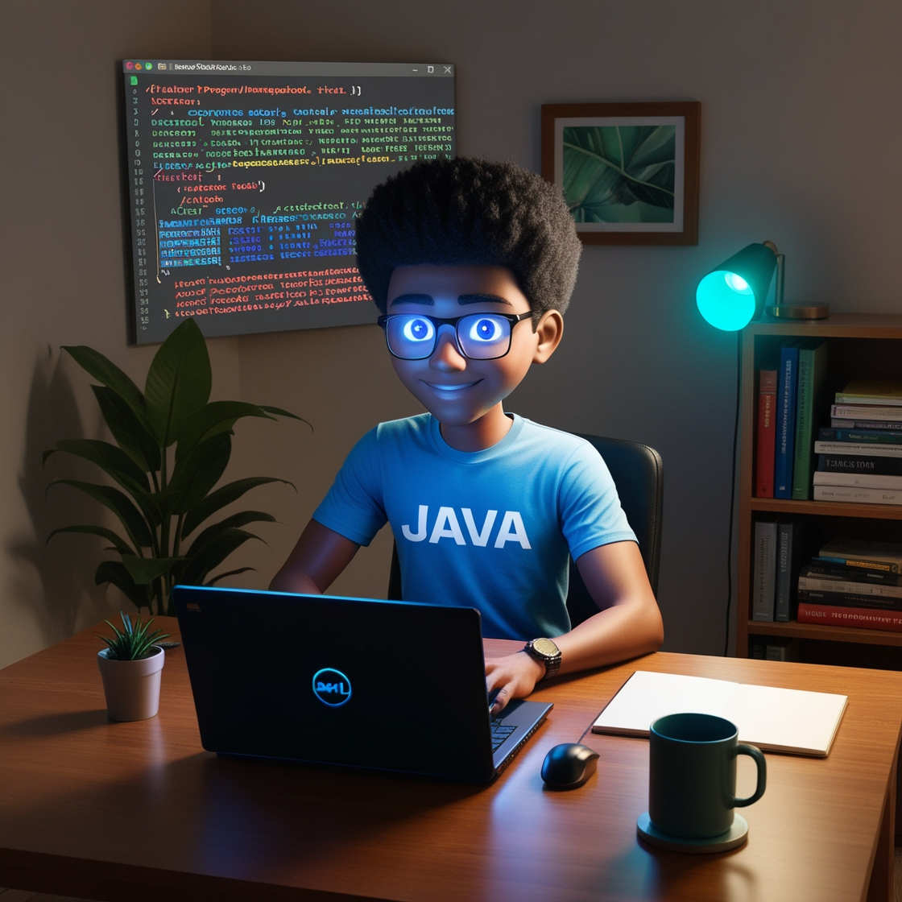
Sobre Mim
Desenvolvimento com foco em Inovação e Qualidade
Especialista em ecossistemas de software robustos
Tenho experiência sólida no desenvolvimento de aplicações full stack, englobando desde backend de alta concorrência com Java Spring Boot e Rust, até interfaces modernas web e mobile com React, Next.js, React Native e Tauri.
Sou criador do ecossistema RhemaBiblion (softwares Desktop e Mobile de estudo bíblico publicado na Microsoft Store), do Aura Dash ERP e de diversas ferramentas nativas de transmissão e integração em Rust.
Backend & Performance
Construção de APIs escaláveis, microsserviços, autenticação OAuth2/JWT e sistemas de alta vazão em Rust e Java.
Desktop & Apps Nativos
Desenvolvimento de softwares para Windows, Linux e macOS com Tauri, Rust, SQLite e integrações de hardware.
Web & Mobile
Criação de dashboards intuitivos, plataformas ERP e aplicativos mobile fluidos para iOS e Android.
Aprendizado Contínuo
Constante atualização técnica, produção de conteúdo no YouTube e soluções focadas na melhor experiência do usuário.
Principais Destaques
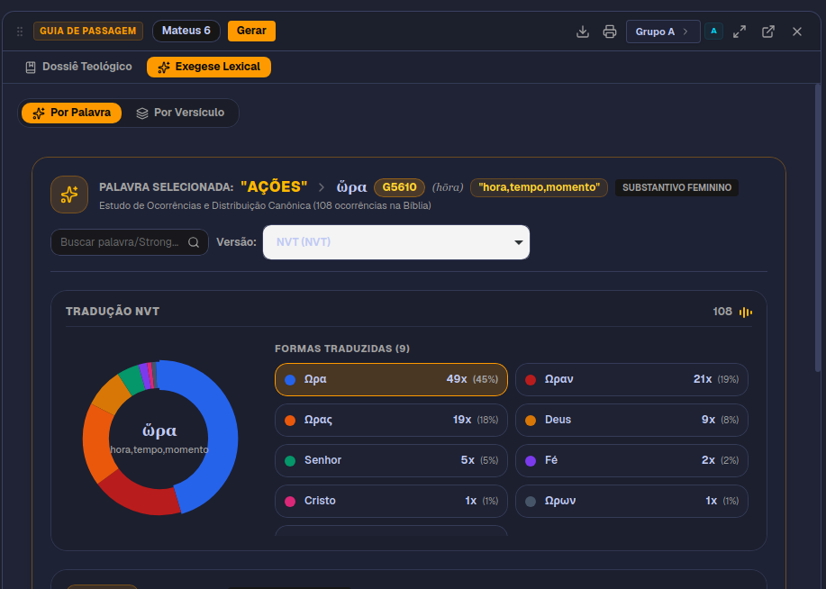
RhemaBiblion Desktop
Ecossistema Desktop de Estudo Bíblico & Morfologia Interlinear
Software desktop de alta performance desenvolvido em Rust e Tauri com banco de dados SQLite embarcado. Disponível na Microsoft Store e Linux.
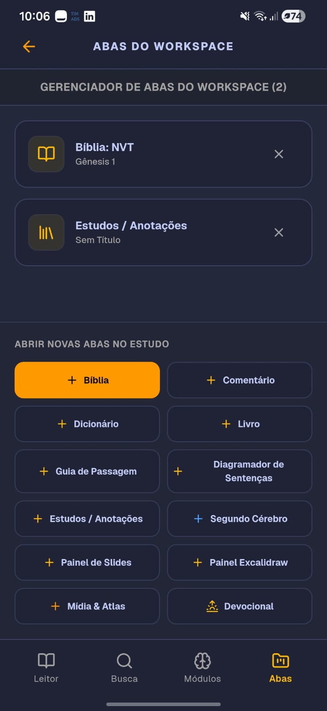
RhemaBiblion Mobile
Estudo Bíblico & Teologia na Palma da Mão
Versão mobile responsiva e otimizada para smartphones com consulta rápida a léxicos, sintaxe interlinear e navegação offline.
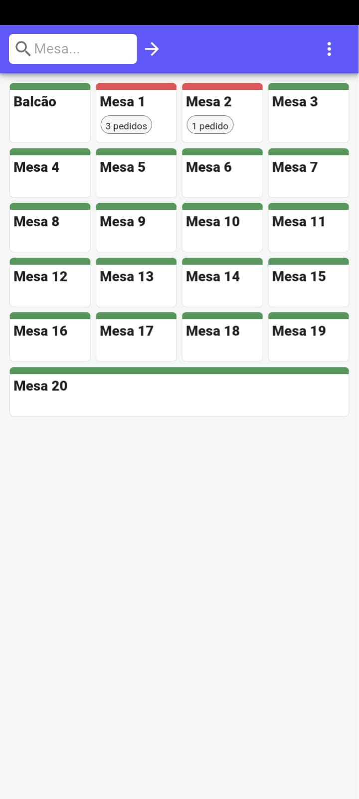
Aura Dash ERP System
Plataforma Completa de Gestão Empresarial & Impressão Silenciosa
Ecossistema ERP moderno com relatórios financeiros, controle de estoque, robô WhatsApp (Baileys) e agente silencioso de impressão em Rust (Aura Print).
Canal TiagoDevFlux & Instagram
Compartilhando Conhecimento com a Comunidade Dev
Conteúdo sobre desenvolvimento de software, arquitetura Java, Rust, dicas de produtividade e bastidores de projetos.
Projetos Desenvolvidos
RhemaBiblion Desktop
Software de estudo bíblico de alta velocidade com sintaxe teológica, morfologia interlinear e SQLite embarcado.
RhemaBiblion Mobile
Aplicativo móvel para estudo teológico e bíblico interlinear direto no smartphone com suporte offline.
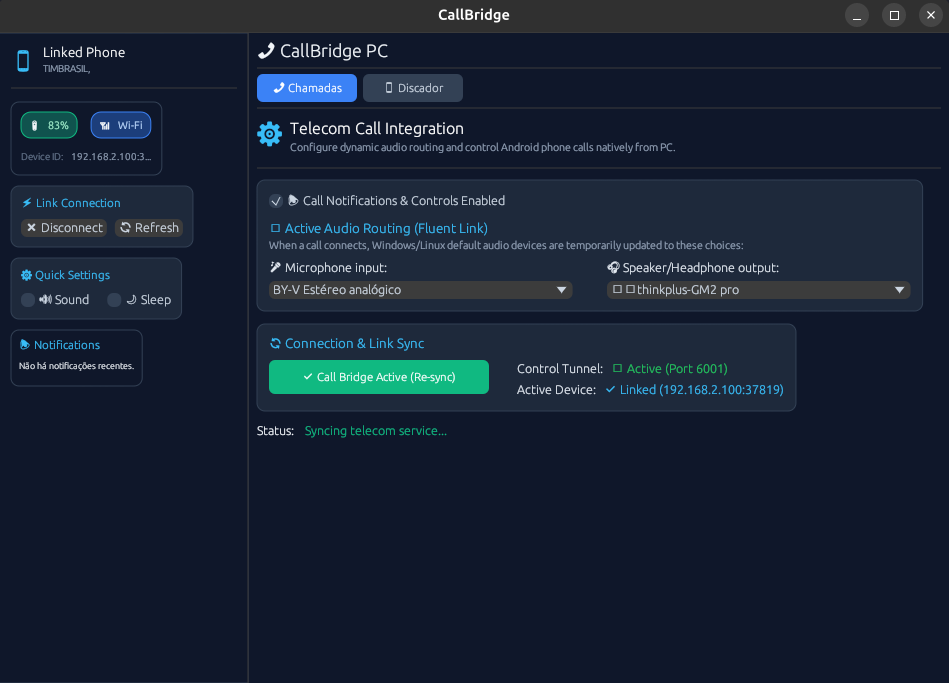
CallBridge - Gestão GSM/WhatsApp
Ferramenta gráfica de alta performance em Rust para gestão de chamadas GSM e ponte com WhatsApp.
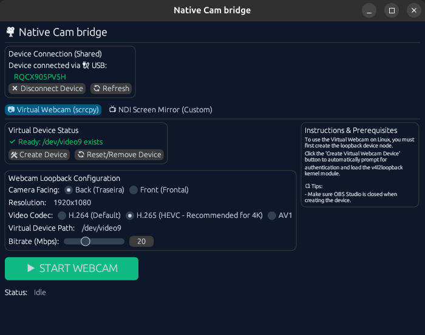
Native Cam NDI
Ferramenta gráfica multiplataforma em Rust para transmissão de vídeo em tempo real com protocolo NDI e ultra-baixa latência.
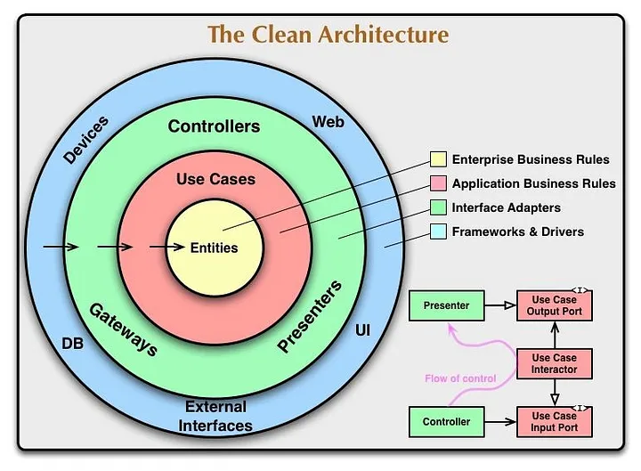
Normatik - Gestão de Medicina do Trabalho
Sistema completo para controle de colaboradores, exames ocupacionais, médicos e anamnese ocupacional.
HR Backend - Clean Architecture
Sistema backend robusto para gestão de recursos humanos e segurança do trabalho com princípios SOLID e Clean Architecture.
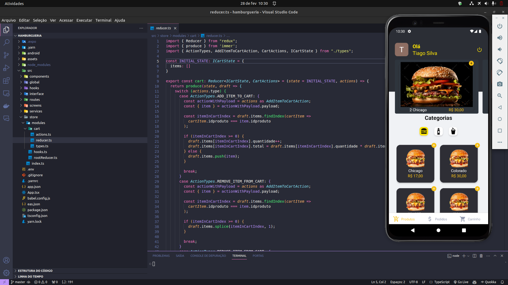
App Hamburgueria Delivery
Aplicativo mobile para pedidos de hamburgueria com autenticação social, carrinho interativo e checkout.
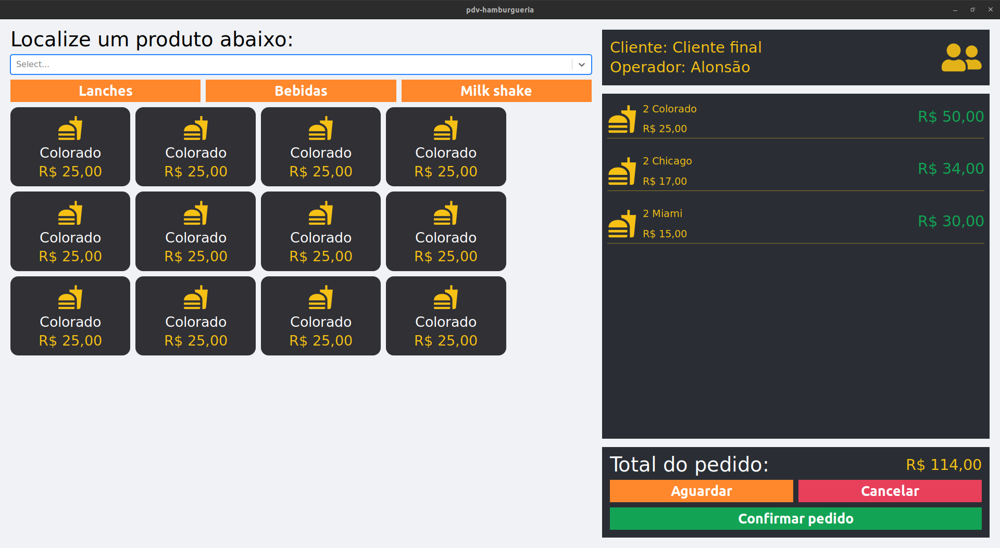
PDV Hamburgueria Desktop
Sistema de Ponto de Venda (PDV) desktop construído com Tauri para controle de caixa e pedidos rápidos.
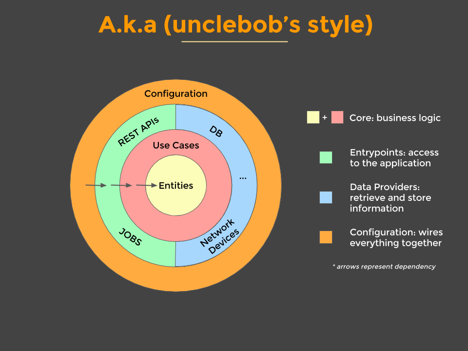
Rinha de Backend - High Performance
API RESTful de altíssima concorrência desenvolvida em Rust com Tokio e Postgres para o desafio Rinha de Backend.
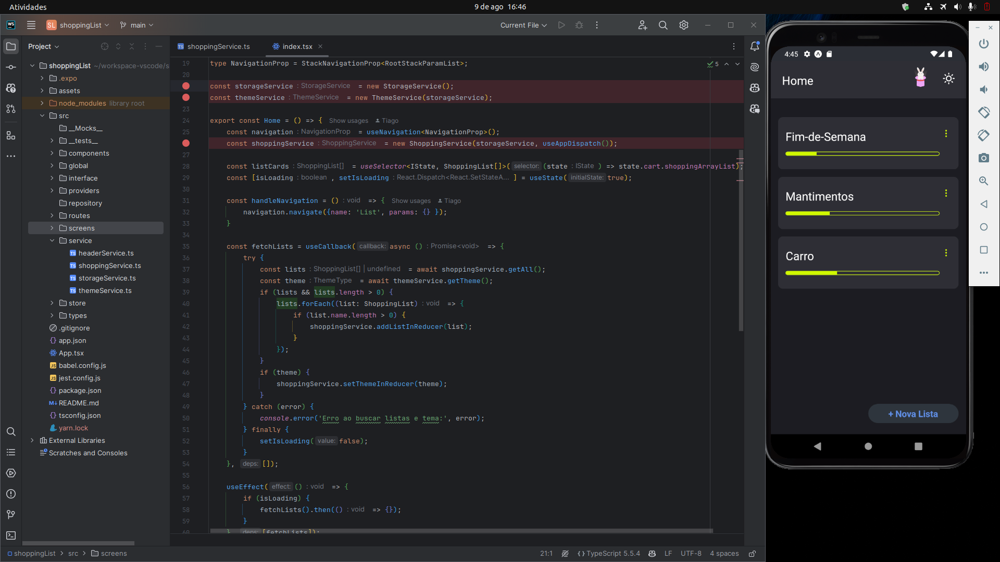
Shopping List - Lista de Compras
Aplicativo móvel prático para criação e gerenciamento inteligente de listas de compras no dia a dia.
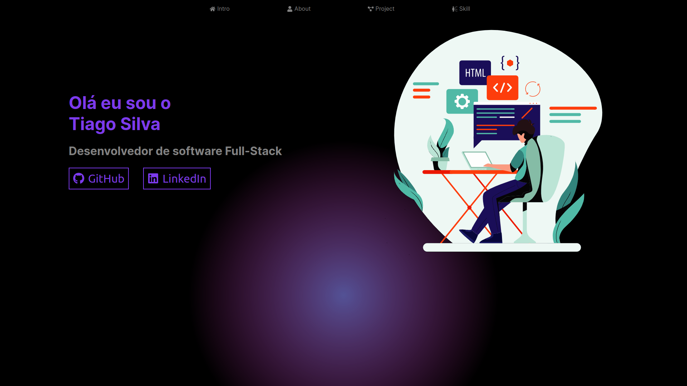
Mikrotik Router Dashboard
Painel de gerenciamento e monitoramento de roteadores Mikrotik com envio de comandos e estatísticas em tempo real.
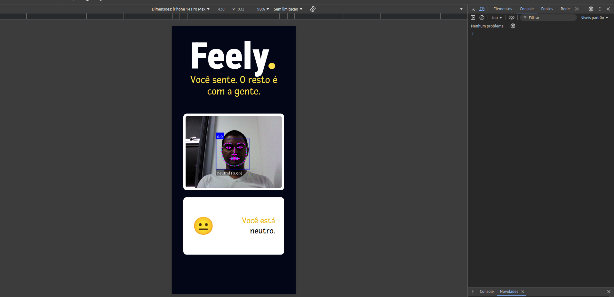
Leitura Facial & Reconhecimento
Aplicação web para captura e reconhecimento facial em tempo real utilizando inteligência computacional no navegador.
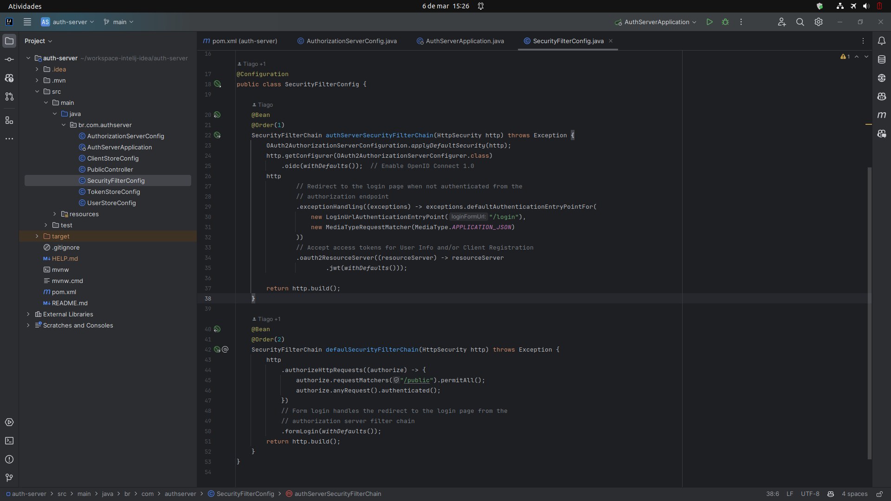
Auth Server OAuth2 & JWT
Servidor centralizado de autenticação e autorização construído em Java com Spring Security e suporte a OAuth2.

Calculadora Desktop Tauri
Calculadora desktop multiplataforma responsiva desenvolvida em Tauri, Rust e React com tema escuro.
Minhas Habilidades
Linguagens & Core
Frontend, Mobile & Desktop
Backend & Banco de Dados
DevOps, Ferramentas & Práticas
Canais & Contato
YouTube
Inscreva-se no canal para acompanhar conteúdos de programação e engenharia de software.
@tiagodevfluxSiga no Instagram para ver bastidores, novidades e novos lançamentos de projetos.
@tiagodevfluxGitHub
Explore todos os repositórios, códigos-fonte e contribuições open-source.
github.com/Tiago-Silva